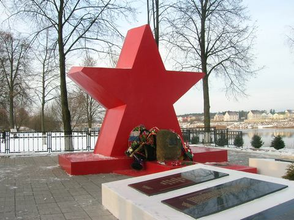

|
Фонд «Жить и Помнить» завершил работу по изучению персональных сведений о воинах Красной Армии, захороненных в братской могиле в поселке Мигалово, г. Тверь.
Согласно учетной карточке и приложению к ней в братской могиле захоронено 627 человек, из них известных – 479. Удалось установить персональные данные 365 захороненных. Сведений о 114 найти не смогли по причине того, что они учтены только по фамилии и инициалам.
Захоронение в поселке Мигалово на наш взгляд является уникальным мемориальным воинским захоронением. Оно было создано путем перезахоронения из братских и одиночных могил в 1956 и 1959 годах. Перезахоронения проводились из могил: у фабрики Вагжанова, на Желтиковом поле, Первомайском кладбище, с кладбища Девичьего монастыря, с ул. Лесной, ул. На песках, из поселка им. Кирова и могил в районе аэродрома Мигалово.
В братской могиле захоронены воины соединений и частей Калининского фронта, принимавших участие в боях за город Калинин в октябре – декабре 1941 года: 133, 185, 243, 246, 250, 252, 256 стрелковых дивизий, авиачастей 3-ей воздушной армии Калининского фронта и ПВО Территории страны, курсов младших лейтенантов Калининского фронта, Высшего Военно-педагогического института РККА, отдельного кавалерийского отряда, 83 погранотряда, 21 танковой бригады, 46 отдельного мотоциклетного полка, 165 отдельной танковой бригады, ополченцы, партизаны, подпольщики, бойцы истребительного батальона г. Калинина и их командир ст. лейтенант Долгорук Г.Т., сотрудники калининской милиции, 3 офицера калининского областного и двух районных военкоматов. Кроме того, там похоронены войны умершие от ран и болезней в госпиталях города Калинина в 1941 – 1945 г.г., а также погибшие в результате происшествий и несчастных случаев.
В этом захоронении покоятся останки двух Героев Советского Союза: гвардии капитана Сидоренко Марка Лукьяновича и младшего лейтенанта Пичугина Евгения Ивановича.
Герой Советского Союза мл. лейтенант Пичугин родился 17 января 1922 г. в Рязанской области. До войны служил в разведывательном авиационном полку МВО. С началом войны проходил службу в авиачастях ПВО, прикрывал с воздуха железнодорожные узлы г. Ржева, г. Ярославля, г. Калинина. 22 июня 1941 г. за ночное отражение воздушного противного на Москву был награжден Сталинской благодарностью. Совершил 82 боевых вылета.
19 марта 1942 г. при нападении на аэродром Мигалово 12 самолетов противника один вступил с ними в бой, расстроил ряды вражеской авиации, не дал прицельно бомбить материальную часть на аэродроме. Уходящего в облачность лидера группы МЕ-110 таранным ударом сбил, сам при этом погиб. Звание Героя Советского Союза присвоено Указом Президиума Верховного Совета СССР 14 февраля 1943 г.
Герой Советского Союза гвардии капитан Сидоренко Марк Лукьянович родился 2 августа 1915 г. в с. Дубиевка Черкасской области. На фронтах Великой Отечественной войны с мая 1942 г. Летчик-истребитель. Воевал на Юго-Западном, Калининском, Брянском, Северо-Западном, Прибалтийском фронтах. Участник Курской битвы. Летал на самолетах И-16, ЯК-1, ЯК-7б, ЯК-9. Из представления командира 66 гв. ИАП на присвоение звания Героя Советского Союза:
«В бою смел, решителен, правильно оценивает обстановку, умело руководит боем, благодаря чему его звено за время участия в боях с германским фашизмом сбило 45 самолетов противника, не имея своих потерь.
13.7.1943 г. вылетая на боевое задание в составе 4-х ЯК-7б с задачей прикрытия своих войск, тов. Сидоров вел бой с большой группой бомбардировщиков под прикрытием истребителей, доходящих численностью до 50 самолетов. В этом бою группа сбила 7 самолетов противника, из них 4 бомбардировщика. Лично тов. Сидоренко сбил два самолета противника: ФВ-190 и Ю-88. В боях с воздушными пиратами тов. Сидоренко был трижды тяжело ранен и дважды легко, по выздоровлению немедленно вступал в строй и снова с еще большей ненавистью уничтожает фашистскихстервятников.
За мужество, отвагу и героизм, проявленные в боях с германским фашизмом, достоин высшей правительственной награды – звания Герой Советского Союза»
На конец июля 1943 г. личный боевой счет гв.капитана Сидоренко М.Л. составлял 11 сбитых самолетов противника, из них 3 бомбардировщика. Звание Героя Советского Союза гв. капитану Сидоренко было присвоено Указом Президиума Верховного Совета СССР от 28 сентября 1943 г.
Трудно представить, как за 14 месяцев боев, получив 5 ранений и возвращаясь после них в строй можно сбить 11 самолетов врага. Какими человеческими и профессиональными качествами нужно обладать.
К июлю 1943 г. был награжден орденом Красной Звезды – 21.02.1943 г.; орденом Отечественной войны 1 степени – 15.03.1943г.; орденом Красного Знамени – 19.07.1943 г.
В марте 1945 г. Марк Лукьянович служил в Мигалово, исполняя обязанности командира эскадрильи 45 учебного тренировочного авиационно-планерного полка. Вероятно, полученные в боях ранения основательно подорвали здоровье. Как рассказывает его дальняя родственница, не желая быть ни для кого обузой, гв. капитан Сидоренко 27 марта 1945 года покончил жизнь самоубийством.
Два летчика, два Героя, две судьбы. И увековечены они на мемориальных плитах братской могилы по-разному: лейтенант Пичугин Е.И. на отдельной мемориальной плите с выбитой на ней надписью о том, что он был удостоен высшей степени отличия Союза ССР: Герой Советского Союза. Указаны на плите и годы жизни 1922-1942гг. Почему не полные даты рождения и гибели? Ведь день гибели Героя 19 марта 1942 г. – это день совершения подвига, за который Евгений Иванович был удостоен высокого звания.
Капитан Сидоренко М.Л. увековечен совсем не как Герой. На мемориальной плите вместе с другими именами только его фамилия и инициалы. Без гвардейского воинского звания, без даты рождения и даты смерти, нет и записи о том, что увековечено имя Героя Советского Союза. Правильно ли это?
Воинское захоронение находится в очень красивом месте, на высоком берегу Волги. Два года назад администрация района добротно провела реконструкцию мемориала, были изготовлены новые мемориальные плиты, уточнены и дополнены списки захороненных.
Однако анализ этих списков показал, что в них допущены некоторые ошибки и неточности. Так в списки захороненных внесены 7 воинов 56 стрелковой дивизии, погибших и первично захороненных на юго-западной окраине города Колпино, Ленинградской области. В число захороненных внесены как погибшие политруки высшего военно-педагогического института Колесник Ф.А. и Сергиенко С.А., которые по докладу начальника института в марте 1942 года были живы и находились на лечении в госпитале города Калинина и ОМСБ 5-ой стрелковой дивизии, политрук Вилькер С.Л. увековечен на Волынском кладбище.
Сержант Бантиков П.А. внесен в списки захороненных братской могилы в деревне Вотолино Демянского района Новгородской области.
Рядовой Баширов Н.Ф. увековечен на Волынском кладбище (на улице З. Коноплянниковой), там же - рядовой Слончаков И.Д., рядовой Ситников С.А., рядовой Иванченко П.А.. Согласно донесениям о безвозвратных потерях и записям в госпитальных книгах умерших были похоронены на кладбище в Б.Перемерках: сержант Блохин В.П., рядовой Васякин М.П., рядовой Глазнев В.Д., капитан Григорьев В.Г., рядовой Гуляев Г.В., рядовой Гурьянов В.С., рядовой Кызакулов Я., рядовой Козиев Э., рядовой Логинов Г.И., рядовой Мамиев З.З., рядовой Нурсаитов А., рядовой Опанитин А.Е., рядовой Петраков А.В., рядовой Старшинов И.И., рядовой Троянов И.Е.
Увековечены в братской могиле в деревне Рябеево Калининского района рядовой Трубников С.Т.; в братской могиле в селе Бурашево – рядовой Гладышев И.Г.; в братской могиле в деревне Величково Андреапольского района – лейтенант Красавин В.Н.; в братской могиле в селе Медное Калининского района - рядовой Лимонов Я.А. Есть в списках захороненных и другие ошибки, которые вызывают законный вопрос: почему тратятся десятки тысяч бюджетных рублей на дорогостоящие материалы и сами работы по реконструкции захоронений, а достойно увековечить имя погибшего солдата не получается? И понимает «увековечить достойно» каждый ответственный за воинское захоронение по-своему. А это еще одно подтверждение тому, что в области должен быть орган, координирующий всю военно-мемориальную работу.
Материалы изучения персональных сведений воинов, захороненных в пос. Мигалово переданы Главе района и военному комиссару области. В сопроводительной записке к этим материалам мы предложили:
- В связи с решением Главы города продолжать перезахоронение останков воинов, найденных поисковиками в черте г. Твери и ее окрестностях вблизи этой братской могилы, рассмотреть вопрос об изменении статуса воинского захоронения и учесть его как воинский мемориал.
- На основании персональных сведений о захороненных внести изменения и дополнения в приложение к учетной карточке воинского захоронения (персональные сведения о захороненных на 368 листах прилагаются).
- Просить Администрацию Пролетарского района г. Твери увековечить память Героев Советского Союза Сидоренко М.Л. и Пичугина Е.И. на отдельной мемориальной доске, указав полные имя и отчество, сведения о дате рождения и дате гибели (смерти), воинском и почетном звании.
- Администрациям Муниципальных образований предложено в случаях проведения реконструкций мемориальных воинских захоронений в городе Твери и Тверской области обращаться в наш Фонд для уточнения данных о захороненных.
|